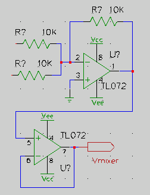
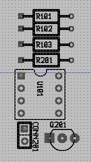

Это учебник по использованию gsch2pcb как интерфейса между gschem и
pcb. Мы предполагаем, что пакеты gEDA, pcb и gsch2pcb у вас
уже установлены и готовы к работе. Начиная с gEDA 20030901, программа
gsch2pcb находится в одном пакете с другими программами gEDA и не
нуждается в отдельной установке. Настоящий учебник функционален и нацелен на
получение как можно более быстрых результатов. Хотя он и не является полным
справочным руководством по gschem или pcb, но на примере
простого проекта показывает все шаги, которые вы могли бы предпринять.
Цель учебника — научиться пользоваться gsch2pcb как мостом между
gschem и pcb, для того чтобы все добавления или удаления элементов на
принципиальной схеме в gschem приводили бы к соответствующим автоматическим
изменениям в топологической схеме в pcb, то есть чтобы топология печатной
платы всегда соответствовала принципиальным схемам. Обратная
трансляция изменений из pcb в gschem в настоящее время невозможна.
История изменений настоящего документа находится в
замечаниях по выпуску.
В gschem в принципиальную схему добавляют символы, изображающие
электронные компоненты. Символ — это группа из
выводов, атрибутов и линий, представляющая небольшое графическое изображение
электронного компонента в электрической схеме.
Выводы разных символов соединяют друг с другом, вычерчивая между ними
соединения. Атрибуты —
это именованные переменные, прикрепляемые к символам и предназначенные для
хранения некоторой информации. Есть три атрибута, непосредственно относящихся
к переводу принципиальной схемы в топологическую, и они должны быть заданы.
Каждый добавляемый в схему символ должен иметь атрибуты footprint,
value, и refdes.
Значение атрибута footprint (посадочное место) в принципиальной
схеме определяет для символа название pcb-элемента, которым данный экземпляр
символа должен быть представлен в топологии платы. pcb-элемент — это группа из
выводов, контактных площадок и контуров
шелкографии, соответствующая форме
электронного компонента. Есть два типа pcb-элементов и это, наверно, сбивает с
толку новичков в pcb. Есть исходные pcb-элементы, генерируемые макросами
m4, и, начиная с версии pcb 1.7, есть ещё и файловые элементы типа
newlib. Файловый элемент — это один фиксированный элемент в одном
файле. В одном же файле m4-элементов макроопределений элементов может быть
много. Чтобы получать программируемые элементы с разным количеством выводов
или изменяемыми размерами, для макросов могут задаваться аргументы. В
настоящем руководстве будет раскрыто использование этих двух типов элементов и
далее я так и буду называть их m4-элементами и файловыми элементами.
При работе в pcb, если в меню Вид → Отображаемое название
элемента выбрать Описание, то как название элемента будет отображаться
значение атрибута gschem footprint. Дело в том, что запись для
каждого конкретного pcb-элемента в файле топологии содержит поле Описание
(Description), которое должно соответствовать посадочному месту
(footprint), и это соответствие отслеживается программой gsch2pcb.
Значение атрибута gschem refdes — это позиционное обозначение в
схеме, такое как Q1, U1, R1 и т. д.
Если в pcb в меню Вид → Отображаемое название элемента
выбрать Позиционное обозначение, то как название элемента будет
отображаться значение атрибута refdes.
Значение атрибута gschem value — это значение (тип или значение
физической величины) конкретного
компонента, такое как, например, BC546, 7400, 1K и т. д.
Если в pcb в меню Вид → Отображаемое название элемента
выбрать Значение, то как название элемента будет отображаться значение
атрибута value.
При организации проектов разработки нужно учитывать структуру каталогов.
Пакеты gEDA и pcb по умолчанию предоставляют вам наборы символов
gschem и pcb-элементов, но можно создать и свои собственные библиотеки.
Где-нибудь, может быть в своём домашнем каталоге, создайте структуру каталогов для своих проектов. Для своих каталогов вы можете придумать имена сами, в данном же учебнике я буду ссылаться на структуру каталогов, используемую мной:
gaf/
gaf/gschem-sym/ Сюда я кладу свои символы gschem.
gaf/gschem-sym/transistors/ Можете организовать подкаталоги для своих символов.
gaf/pcb-elements/ Сюда я кладу свои элементы pcb.
Их также можно организовать с помощью подкаталогов.
gaf/myproject1/ И, наконец, отдельные каталоги для каждого
gaf/myproject2/ проекта.
...
При такой организации любые ваши символы gschem и pcb-элементы могут быть
общими для всех ваших проектов и это достаточно хорошо для начала работы.
Однако, я упомяну и другие возможности, которые будут описаны ниже: у вас
могут быть подкаталоги файловых элементов или файлы m4-элементов
pcb для конкретных проектов; кроме того, администраторы САПР могут
настроить для общего пользования и локальные каталоги файловых элементов,
и файлы m4-элементов.
Настройка gEDA (для новых версий >= 2005): программы
gschem,
gnetlist и может быть другие, используемые вами, как например
gattrib, должны иметь возможность найти любые создаваемые вами символы, поэтому этим программам нужно сказать, где лежат каталоги ваших символов для
gschem, добавив строки
component-library в файл
gafrc — либо в файл, общий для проектов пользователя,
${HOME}/gafrc, либо в файл
gafrc в каталоге конкретного проекта. Есть ещё системный файл
${GEDADATA}/system-gafrc, который могут настроить администраторы. Чтобы данные файлы можно было найти, должны быть соответственно установлены переменные окружения
HOME и
GEDADATA. Для описанной нами выше структуры каталогов в
${HOME}/gafrc можно добавить следующие строки (а также строки и для других подкаталогов, которые вы бы хотели создать в
gschem-sym):
(component-library "${HOME}/gaf/gschem-sym")
(component-library "${HOME}/gaf/gschem-sym/transistors")
Или же файлы gafrc можно добавить в каталоги каждого из проектов (в такие как myproject1 и myproject2, указанные выше) и прописать в них:
(component-library "../gschem-sym")
(component-library "../gschem-sym/transistors")
Настройка gEDA (для старых версий >= 2004): файлы gafrc в этих версиях не поддерживаются. Хотя фактически возможность их использования была введена в середине 2004 г., на самом же деле, чтобы в полной мере иметь описанную здесь функциональность (относительные пути), нужен пакет gEDA 2005 года. В любом случае для старых пакетов gEDA строки component-library нужно скопировать в несколько rc-файлов для разных программ gEDA:
Если хочется более детальной настройки
gschem и
gnetlist, можно переопределить и другие начальные установки, заданные в глобальных rc-файлах. В Debian, чтобы узнать, что можно настроить, посмотрите rc-файлы в
/etc/gEDA/. Мне, например, нравится светлый фон в
gschem, поэтому я прописываю в свой
~/.gEDA/gschemrc строку:
(load (string-append gedadatarc "/gschem-lightbg")) ; light background
Настройка pcb: обычно пакет
pcb настроен так, что
pcb автоматически смотрит в подкаталог
packages в рабочем каталоге. Поэтому, для того чтобы эта программа находила все элементы, лежащие у меня в каталоге
gaf/pcb-elements, в каждом из каталогов своих проектов я делаю на него ссылку. Заметьте, что на самом деле эта ссылка при использовании
gsch2pcb не обязательна, потому что, как будет показано ниже, альтернативно каталог
pcb-elements можно прописать в
файле проекта. Но если вы хотите такую ссылку сделать, перейдите в каталог
gaf/myproject1 и введите команду:
ln -s ../pcb-elements packages
Настройка gsch2pcb: В каждом из каталогов своих проектов создайте для gsch2pcb файл проекта, который можно называть как угодно, лишь бы имя не оканчивалось на .sch. Файл проекта мы создадим в примере ниже.
Вот и все настройки, которые нужны после исходной установки пакетов gschem, gsch2pcb и pcb.
Давайте настолько быстро, насколько это возможно, разработаем простой проект,
начиная с принципиальной схемы и заканчивая созданием топологии печатной
платы, и затем его можно будет использовать как основу для более серьёзных
вещей. Я сразу немного усложню этот проект, используя в нём две принципиальных
схемы.
Предположим, вы уже настроили структуру каталогов, как описано выше. Теперь
перейдите в каталог gaf/myproject1 и создайте файл project,
содержащий следующее:
schematics one.sch two.sch
output-name board
Если вы в gschem впервые, попробуйте сделать простую
разминку в gschem.
 Запустите
Запустите gschem one.sch и создайте
эту схему (на самом деле второй операционный усилитель здесь лишний, но ведь
это просто учебник):
Откройте диалоговое окно выбора компонентов (нажмите клавишу [i])
Убедитесь, что в выпадающем меню внизу диалогового окна установлено Поведение по умолчанию – ссылка на компонент.
Добавьте компоненты:
Из библиотеки Basic devices три символа resistor-1.sym и два dual-opamp-1.sym.
Из библиотеки Input/Output один output-2.sym.
Из библиотеки Power rails один gnd-1.sym, два vcc-1.sym и два vee-1.sym
Разместите компоненты средней кнопкой мыши и поверните некоторые из них, выделив и нажав клавиши [e][r], чтобы всё выглядело красиво. Поверните нижний операционный усилитель и зеркально отразите его, нажав [e][i].
С помощью клавиши [n] и мыши начертите соединения.
Большая рамка основной надписи также является компонентом. Для удобства она
заблокирована, чтобы предотвратить постоянный захват её мышью. Чтобы
разблокировать рамку, выделите её перемещением мыши, удерживая левую кнопку
нажатой, а затем нажмите [e][Shift-L]. В библиотеке Titleblocks можно
найти рамки основной надписи различных размеров1). Запомните, чтобы заблокировать новую рамку, её
нужно выделить и нажать [e][l].
 Для каждого из компонентов нужно сделать
следующее: выделить его и вызвать окно атрибутов нажатием клавиш
[e][e]. Атрибут refdes здесь менять не надо, а сделайте вот что:
Для резисторов и операционных усилителей добавьте видимые атрибуты value и установите для них подходящие значения (10K, TL072). Расставьте их средней кнопкой мыши покрасивее. Если трудно их выбрать, увеличьте масштаб и опять действуйте средней кнопкой.
Для резисторов добавьте атрибуты footprint и установите их значения в R025 — это m4-элемент в pcb для 0,25-ваттных резисторов. Сделайте эти атрибуты невидимыми.
Для операционных усилителей измените уже существующие атрибуты footprint на DIL 8 300. Да, пробелы здесь нужны, так как DIL является m4-элементом, принимающим два аргумента. Мы говорим ему сделать двухсторонний корпус DIL с 8 выводами шириной 300 милов. Измените атрибут slot второго операционного усилителя на 2. Номера его выводов для входов/выходов должны измениться с (1,2,3) на (5,6,7).
Для символа выходного
порта установите атрибут
net в
vmixer:1 и сделайте его видимым. Атрибут
value для него установите в
Vmixer.
Может быть вам показалось, что вот так редактировать схемы с большим
количеством компонентов, не имеющих приемлемых исходных значений атрибутов,
очень тяжело. Но есть пара способов облегчить этот труд, по крайней мере в
отношении посадочных мест. Можно создать свою библиотеку символов с такими
исходными значениями атрибутов footprint (и даже value), которые
подходят для большинства ваших задач. Или при добавлении первого компонента
для него сразу надо задавать подходящий корпус, а затем копировать его
(выделить компонент и нажать [e][c]), а не добавлять остальные компоненты из
библиотеки.
Так или иначе, пока мы закончили со схемой one.sch, так что сохраните
её, выбрав в меню Файл → Сохранить страницу, и выйдите из
gschem.
Это будет на самом деле просто и глупо, так как здесь она нужна только для
демонстрации возможности работы с несколькими схемами.
 Запустите
Запустите gschem two.sch:
Добавьте компонент title-B.sym таким же образом, как добавляли в one.sch.
Добавьте компоненты:
Из библиотеки Input/Output один input-2.sym.
Из библиотеки Basic Devices один resistor-1.sym.
Из библиотеки Transistors один 2N3904-1.sym.
Из библиотеки Power rails один gnd-1.sym, один vcc-1.sym и один vee-1.sym.
Из библиотеки Connectors один BNC-1.sym.
Разместите компоненты и начертите соединения как и прежде.
Отредактируйте атрибуты компонентов:
Входной порт: измените атрибут net так, чтобы он был невидимым и имел значение vmixer:1, так что это соединение будет подключено к vmixer в one.sch. Установите атрибут value в Vmixer.
Резистор: установите для него невидимый атрибут footprint в R025 и видимый атрибут value в 10K.
Транзистор: добавьте атрибут value со значением 2N3904 и невидимый атрибут footprint со значением TO92.
BNC-коннектор: добавьте невидимый атрибут footprint CONNECTOR 2 1, что определяет m4-элемент, принимающий аргументы, и мы говорим ему сделать соединитель с двумя рядами и одним столбцом. Хотя в принципиальной схеме у нас BNC-коннектор, но на самом деле пусть он будет смонтирован на панели, а на плате будет фронтальный соединитель, с которого мы и кинем на него провода.
К сожалению, неотъемлемой частью добавленного нами символа 2N3904 является
видимый текст “2N3904”. Поэтому, когда мы добавляем атрибут value (нужный
нам для того, чтобы на топологической схеме отображались соответствующие
значения), на нашей принципиальной схеме видны два обозначения, если не
сделать атрибут value невидимым. Это нехорошо и в данном примере нам
придётся смириться с этим, но учтите, что в большинстве случаев намертво
прибивать информацию к символам — не очень хорошая идея. Кроме того,
атрибут device по умолчанию ошибочен и должен иметь значение
NPN_TRANSISTOR, но это не влияет на наше изложение. Это так, для сведения,
что сейчас в gschem есть символы, переносящие из старых версий gschem
в новые устаревшие методы работы с атрибутами. Если вам придётся работать с этими
схемами в SPICE, символы должны иметь правильные атрибуты device.
Теперь мы закончили с принципиальными схемами, лишь не определили атрибуты
refdes, и можем воспользоваться командой refdes_renum, чтобы сделать
это для обеих схем сразу. Итак, сохраните two.sch, выйдите из
gschem и запустите:
refdes_renum --pgskip one.sch two.sch
Откройте схемы в gschem снова и посмотрите, какие значения теперь заданы
атрибутам refdes компонентов. Ключ --pgskip устанавливает начало
нумерации в 101 для one.sch и в 201 для two.sch. Вам следует знать
однако, что запуск refdes_renum на самом деле полезен только для
первоначальной нумерации. Если позже вы станете менять свои схемы, добавлять
или удалять компоненты, никто не даст гарантии, что при повторном запуске
refdes_renum компоненты сохранят существующие значения refdes. Если
тем временем вы с помощью gsch2pcb уже создали печатную плату, эта
путаница с номерами позиционных обозначений приведёт к несоответствию ваших
принципиальных схем топологии печатной платы. Поэтому после того как вы один
раз запустите refdes_renum и начнёте заниматься разработкой топологии печатной
платы, для безопасности (уникальные) атрибуты refdes для каждого из
добавляемых компонентов лучше задавать вручную. Также учтите, что
refdes_renum может пронумеровать ваши резисторы не так, как получилось
здесь в моём примере, это зависит от порядка их добавления. Имейте это в виду,
сравнивая свою окончательную топологию с той, которую увидите на приведённых
ниже рисунках.
Прежде чем мы сможем продолжить, в one.sch нужно кое-что исправить.
Запустите gschem one.sch и обратите внимание, что программа
refdes_renum установила для наших операционных усилителей значения
refdes в U101 и U102, не подумав, да и откуда она знает, что на
самом деле мы хотим использовать два операционных усилителя в одном корпусе
TL072. Для того-то мы и редактировали атрибут slot второго
операционного усилителя. Нам нужно вернуться и исправить атрибут refdes
второго усилителя на U101, чтобы у обоих усилителей он был одинаков и на
нашей печатной плате был только один корпус TL072.
Теперь, когда файл project для gsch2pcb уже настроен, всё что нам
надо сделать для создания исходного набора pcb-файлов, это запустить
gsch2pcb:
~/gaf/myproject1$ gsch2pcb project
0 file elements and 7 m4 elements added to board.pcb.
(0 файловых элементов и 7 m4-элементов добавлено к board.pcb.)
Так как в файле проекта output-name установлено в board, то создаваемые pcb-файлы называются board.pcb и board.net.
Внимание: более современный совет — сначала создать пустую плату в pcb,
а затем при каждом запуске gsch2pcb в топологии будут производиться
изменения, как описано ниже (в разделе Изменение схем).
Смысл в том, что в настоящее время установки по умолчанию для gsch2pcb
совершенно отличаются от таковых для pcb, и по общему мнению для
большинства случаев умолчания pcb лучше.
Но есть одно “но”: если вы с помощью pcb2panel компонуете из нескольких
топологических схем одну на одной плате, то
если платы создавались с винегретом из умолчаний gsch2pcb и (современной)
программы pcb без редактирования стека слоёв, которое может требовать
дополнительной работы, вы получите непригодные результаты. (mjm, Aug 2008)
Если gsch2pcb говорит вам что-то вроде:
2 unknown elements added to board.pcb. (2 неизвестных элемента добавлено к
board.pcb), запустите программу с флагом -v: gsch2pcb -v project и
вывод gsch2pcb подскажет вам, какие компоненты в схеме не имеют
известного footprint.
Либо вы забыли добавить данный атрибут, либо его значение неправильно, либо
pcb-элемент для него отсутствует в установленных библиотеках.
Но если gsch2pcb вообще не может найти ни одного элемента и все 7
неизвестны, то, вероятно, gsch2pcb не может найти каталог установки ваших
m4-элементов для pcb. В таком случае посмотрите первую часть раздела
Нестандартные m4-элементы .
 Запустите
Запустите pcb board.pcb.
Вы увидите большую кучу pcb-элементов, заданных в атрибутах footprint
компонентов схемы. Это нормально, позже мы приведём всё это в порядок.
Когда вы открываете pcb-файл в pcb первый раз, нужно настроить разные
исходные значения.
Обычно для большей части работы по разводке я сначала устанавливаю шаг
сетки в 25 милов из меню Вид → Шаг сетки → 25 милов,
а затем, если где-нибудь понадобится более плотная компоновка, изменяю его на меньшие значения.
Обратите внимание, что если единицами измерения сделать миллиметры с помощью
Вид → Единицы измерения сетки → мм, то вместо милов
в меню Вид → Шаг сетки будет ряд вариантов размеров в
миллиметрах. Между миллиметрами и милами можно переключаться в любое время.
Ещё нужно задать умолчания для размеров линий и отверстий в стилях разводки
Сигналы, Питание, Толстый и Тонкий. Чтобы задать эти размеры,
надо просто выбрать один из этих стилей в нижнем левом углу окна pcb и
нажать кнопку Стиль трассировки. Размер своей платы можно установить
сейчас, а можно отложить на потом, занявшись работой над топологией. Чтобы
изменить размер платы, откройте окно Файл → Настройки… и
выберите страницу Размеры. В этом окне можно поменять и другие значения,
например, приращения и значения для проверки на соответствие проектным нормам.
Чтобы узнать, что это такое, вам следует просмотреть документацию по pcb.
И может быть вам покажется полезной установка Вид → Отображать
сетку.
 Берите элементы средней кнопкой мыши и
расставляйте по одному, пока их все не разнесёте.
Можно и самой программе pcb позволить разнести элементы с помощью
Выделение → Распределить все элементы, а потом
уже вручную подкорректировать их положение.

Для уменьшения беспорядка pcb пытается начертить линии связи для сложных
соединений так, чтобы их суммарная длина была наименьшей. Попробуйте
перетащить элемент на другую сторону рабочей области. Линии связи будут
следовать за ним как резиновые, но их концы не будут перепрыгивать на другие
узлы, хотя при этом общая длина и могла бы стать меньше. Перепрыгнуть линии
связи, для получения “лучшей” геометрии, заставит действие
Оптимизировать линии связи. В любое время его легко запустить, нажав
клавишу [o].
 Теперь линии связи нужно заменить дорожками,
которые можно будет протравить на медной поверхности платы. Обычно после
Распределить все элементы линии связи расположены беспорядочно и часто
пересекаются. Попробуйте распутать как можно больше этих линий перемещением и
поворотом компонентов. Ключ к хорошо разведённой печатной плате — правильное
размещение компонентов. Хотя pcb и пытается приводить линии связи в
порядок, будет хорошо, если вы привыкнете при размещении компонентов время от
времени их оптимизировать, нажимая клавишу [o].
Теперь линии связи нужно заменить дорожками,
которые можно будет протравить на медной поверхности платы. Обычно после
Распределить все элементы линии связи расположены беспорядочно и часто
пересекаются. Попробуйте распутать как можно больше этих линий перемещением и
поворотом компонентов. Ключ к хорошо разведённой печатной плате — правильное
размещение компонентов. Хотя pcb и пытается приводить линии связи в
порядок, будет хорошо, если вы привыкнете при размещении компонентов время от
времени их оптимизировать, нажимая клавишу [o].
Выберите инструмент ROT ([F9]), позволяющий средней кнопкой мыши
перемещать элементы, а левой — поворачивать. Правой кнопкой при увеличенном
масштабе можно смещать область просмотра в пределах рабочей области окна. Попробуйте
увеличить и уменьшить масштаб колёсиком мыши или клавишами [z] и
[Shift-z]. Наведите курсор мыши на вывод и нажмите клавишу [f], чтобы
подсветить объекты, касающиеся этого вывода и получше рассмотреть дорожки.
Попробуйте убрать подсветку, нажав [Shift-f]. В любое время изменения можно
отменить, нажав [u].
Обратите внимание: вместо того, чтобы вручную размещать компоненты (или
разносить с помощью команд Выделение → Распределить …), как
описано выше, можно использовать возможность авторазмещения в pcb. Для
этого нужно загрузить список соединений, выбрать компоненты для
автоматического размещения (если это первый запуск pcb, просто Выделение →
Выделить все видимые объекты), затем выбрать Выделение →
Авторазмещение выделенных элементов. После этого можно снова
подкорректировать созданную программой расстановку вручную. Функция
авторазмещения должна расставить элементы более разумно, чем функция
распределения, но когда топология разрастается, она работает намного
медленнее.
 Теперь можно начать трассировку — разводку
дорожек между выводами, соединёнными линиями связи. На левой панели
инструментов pcb выберите инструмент LINE, выберите слой, на котором
хотите чертить (solder – слой пайки, component – слой компонентов, и
т. д.), и начните чертить линии, выбирая конечные точки левой кнопкой мыши.
Отметим ещё раз, клавиша [f] поможет вам найти дорожки, которые нужно
соединить. Если вы хотите остановить текущую дорожку, чтобы начать чертить
новую где-то в другом месте, закончите её щелчком средней кнопки мыши.
Можно поиграться здесь и с автотрассировкой.
Теперь можно начать трассировку — разводку
дорожек между выводами, соединёнными линиями связи. На левой панели
инструментов pcb выберите инструмент LINE, выберите слой, на котором
хотите чертить (solder – слой пайки, component – слой компонентов, и
т. д.), и начните чертить линии, выбирая конечные точки левой кнопкой мыши.
Отметим ещё раз, клавиша [f] поможет вам найти дорожки, которые нужно
соединить. Если вы хотите остановить текущую дорожку, чтобы начать чертить
новую где-то в другом месте, закончите её щелчком средней кнопки мыши.
Можно поиграться здесь и с автотрассировкой.
Очень полезное действие инструмента SEL — выделение нескольких объектов
с последующим вырезанием или копированием их в буфер обмена из меню
Правка → Вырезать выделение в буфер (или Правка →
Копировать выделение в буфер). Содержимое буфера можно тотчас же
вставить или отменить текущую вставку выбором другого инструмента. Содержимое
буфера можно вставить потом в любое время из меню Буфер →
Вставить из буфера. Таким образом можно перемещать области топологии
или переходить в другое место и повторять общие шаблоны дорожек. Чтобы выбрать
несколько объектов инструментом SEL, надо нажав кнопку мыши выделить
нужную область, потом нажав [Shift] и щёлкая мышью можно добавлять объекты к
уже выделенным.
Когда разводка дорожек закончена (если при очередной оптимизации линий связи
все дорожки разведены, pcb вас поздравит с этим), плата может выглядеть
примерно так, как показано здесь. Для такого вида я выбрал Вид →
Отображаемое название элемента → Значение).
Вам, вероятно, хочется иметь больше информации по использованию pcb и в
tar-архиве исходных текстов pcb есть комплект документации в формате
HTML. Я не знаю, на что здесь сослаться, но со страницы
Разработка pcb можно скачать
последний tar-архив. Файлы документации могут быть установлены где-то и в
вашей системе. В Debian они устанавливаются из пакета в
/usr/share/doc/pcb/html/. В pcb есть ещё и удобная “активная”
документация, с помощью которой можно познакомиться с назначением клавиш или
вводимыми с клавиатуры командами. Откройте меню Информация →
Назначение клавиш и вы, вероятно, обнаружите, что просто читая об
имеющихся привязках клавиш можно научиться многому из того, что можно делать в
pcb.
Если в окне Файл → Настройки… вы выбрали Использовать
отдельное окно для ввода команд, то затем, когда откроете окно команд через
Окно → Ввод команды (или клавишей [:]), вы увидите
стрелку и надпись Справка по командам. Щёлкните на стрелку и откроется
справка по некоторым командам, которые здесь можно набрать и для которых могут
отсутствовать пункты меню или привязки клавиш.
Скажем, например, вы задали на странице Настройки… →
Приращения размер приращений равный 5 милов. С такой настройкой можно
выбрать несколько линий и затем увеличить их ширину на 5 милов из меню
Выделение → Изменить размер выделенных объектов → Линии
+5 милов. Но предположим, значения ширины хочется менять произвольно, а
каждый раз Настройки… менять неудобно. Тогда можно выбрать несколько
линий, открыть окно команды (нажатием [:]) и ввести команду:
changesize(selectedlines, +3, mils)
и выбранные линии увеличатся на 3 мила. Эта команда теперь в списке истории,
её можно вызвать повторно и быстро отредактировать в окне команды, подставив
нужные значения размеров.
Для некоторых разработок важно располагать компоненты на обеих сторонах
платы, хотя в предшествующем примере это нам и не нужно. В таких случаях
клавишей [Tab] плату можно перевернуть сверху вниз и посмотреть на неё
сзади, в то время как клавишей [b] выделенный компонент можно переместить
на противоположную сторону платы.
Для двухсторонних плат также важно учитывать, на какой стороне находится
конкретный слой дорожек. Это можно посмотреть и настроить в диалоговом окне
Файл → Настройки… → Слои → Группы. Слои
стороны component будут находиться наверху платы, слои стороны
solder — внизу. В этом окне нужно обеспечить, чтобы все слои, которые
будут производиться за один шаг (т. е. протравливаться фотолитографическим
методом), были сгруппированы вместе.
Процесс переноса изменений принципиальной схемы в топологию pcb с помощью
gsch2pcb очень прост. После того как с помощью gsch2pcb создан
исходный файл board.pcb, всякий раз, когда в схемы вносятся изменения
в gschem, нужно запускать gsch2pcb project. Затем надо будет
запустить pcb board.pcb и выполнить необходимые шаги в зависимости
от действий программы gsch2pcb. Каждый раз при запуске gsch2pcb
происходит следующее:
gsch2pcb всегда создаёт новый список соединений board.net. Если соединения изменились, загрузите этот файл после запуска pcb.
Если вы добавили в схему компоненты (с атрибутами footprint), gsch2pcb создаст файл board.new.pcb, содержащий все новые pcb-элементы, соответствующие этим атрибутам. Затем запустите pcb board.pcb и загрузите board.new.pcb с новыми элементами в существующую топологию с помощью Файл → Загрузить топологию в буфер обмена. Разместите новые элементы, загрузите новый список соединений и проведите новые дорожки.
Если вы удалили компоненты из схемы, gsch2pcb удалит соответствующие pcb-элементы из board.pcb. Вам нужно только запустить pcb board.pcb и убрать висящие дорожки, оставшиеся от удалённых элементов.
Если вы изменили атрибут footprint существующего компонента, gsch2pcb удалит соответствующий ему старый элемент из board.pcb и добавит новый элемент к board.new.pcb.
Если вы изменили атрибуты value компонентов схемы, изменённые значения будут внесены непосредственно в файл board.pcb.
Итак, при использовании gsch2pcb все изменения pcb-элементов приводятся в
действие изменениями в принципиальных схемах и элементы для компонентов
никогда не нужно добавлять или удалять вручную.
Однако pcb-элементы, не являющиеся частью схем, такие как отверстия для
крепежа печатной платы, всё же придётся добавлять вручную. При этом надо
обеспечить, чтобы таким, добавленным вручную, pcb-элементам никогда не
задавалось Название на плате, так как оно зарезервировано для значений
атрибутов refdes компонентов принципиальной схемы и gsch2pcb захочет
удалить элементы с непустым Названием на плате, не соответствующие ни одному
из значений refdes компонентов схемы.
До сих пор для нашей платы мы использовали только m4-элементы, теперь
давайте изменим схему и попробуем работать с файловыми элементами. Но
сначала хорошо бы познакомиться с элементами, предлагаемыми в pcb по
умолчанию.
В зависимости от места установки вашей pcb у вас будет каталог
/usr/local/share/pcb/newlib, /usr/share/pcb/newlib или
возможно какой-то ещё (это зависит от префикса, указанного при установке
pcb). В версиях pcb до 20031113 вместо библиотеки newlib
использовалась pcb_lib, путь доступа к которой /usr/local/pcb_lib
или /usr/lib/pcb_lib.
Когда вы найдёте у себя каталог newlib, взгляните на имена файлов в его
подкаталогах. Каждое из этих имён может использоваться как значение атрибута
footprint для компонентов в принципиальной схеме.
Например, имеется файл
xxx/newlib/2_pin_thru-hole_packages/0.125W_Carbon_Resistor, так что
если бы мы на своей плате захотели использовать 0,125-ваттные резисторы,
атрибут footprint резистора можно было бы установить в
0.125W_Carbon_Resistor вместо R025.
Попробуйте изменить, скажем, резистор R101 в one.sch, задав для него
0.125W_Carbon_Resistor, а затем запустите gsch2pcb project.
Если gsch2pcb не находит такого элемента, значит в свой файл
project вам нужно добавить путь доступа к каталогу newlib
примерно такой строкой:
elements-dir /usr/lib/newlib
Если gsch2pcb найдёт его, вы получите:
~/gaf/myproject1$ gsch2pcb project
board.pcb is backed up as board.pcb.bak1.
(board.pcb сохранён как board.pcb.bak1.)
1 elements deleted from board.pcb.
(1 элемент удалён из board.pcb)
1 file elements and 0 m4 elements added to board.new.pcb.
(Добавлено 1 файловых элементов и 0 m4-элементов в board.pcb)
Теперь нужно запустить pcb board.pcb. Вы увидите, что элемент для
резистора R101 пропал и при загрузке board.new.pcb из меню
Файл → Загрузить топологию в буфер обмена появится новый
элемент.
Обычным способом создания своих нестандартных символов является изменение
существующих. Что мне не нравится в используемом нами
dual-opamp-1.sym, так это то, что выводы питания повторяются на каждом
символе. Хотя кому-то может это и нравится, мне кажется, что при этом
страница, полная операционных усилителей, выглядит слегка хаотично. Это
предоставляет нам неплохую возможность изучить атрибуты net в данном
руководстве. К символам в gschem можно прикреплять атрибуты net,
которые привязывают выводы к конкретным соединениям. Вместо подключения
выводов 8 каждого операционного усилителя к Vcc, а выводов
4 к Vee в схеме, можно сделать так, что это будет производиться
автоматически, и эти выводы из схемы убрать. Для этого просто скопируйте файл
исходного символа в каталог своих символов для gschem, задав ему новое
имя, и отредактируйте его. Выполните шаги, описанные ниже. (Каталог установки
символов gEDA может быть у вас другим, например,
/usr/local/share/gEDA/sym/):

cd /usr/share/gEDA/sym/analog/
cp dual-opamp-1.sym ~/gaf/gschem-sym/opamp-dual.sym
cd ~/gaf/gschem-sym
gschem opamp-dual.sym
Нажмите клавиши [e][n], чтобы атрибуты было видно.
Нажмите клавиши [v][e], чтобы увидеть всю схему целиком.
Выделите вывод 8 щелчком левой кнопки мыши по нему.

Удалите вывод 8 нажатием клавиши [Delete].
Подобным образом выделите и удалите вывод 4.
Дважды щелкните по строкам slotdef, чтобы выбрать и изменить их. Удалите из них выводы 4 и 8.
 Из меню Добавить → Атрибут…:
Из меню Добавить → Атрибут…:
Добавьте атрибут net со значением Vcc:8. Выберите Показать имя и значение и сделайте его невидимым.
Добавьте атрибут net со значением Vee:4. Установите Показать имя и значение и сделайте его невидимым.
Атрибут device установите просто в OPAMP.
Упорядочьте новые атрибуты, как показано на рисунке.
Если хотите, можете изменить значение атрибута footprint, которое будет
устанавливаться по умолчанию. При редактировании символов очень важно после
внесения всех изменений выполнять Правка → Смещение
символа…, устанавливая смещение в ноль перед сохранением. Сделайте это и
сохраните символ из меню Файл → Сохранить. Я установил
значение атрибута footprint по умолчанию в DIP8, так как это мой
собственный элемент.
 Запустите
Запустите gschem one.sch. Выделите и
удалите клавишей [Delete] оба операционных усилителя. Удалите также
подключенные к ним символы Vcc и Vee. Откройте окно
Добавить → Компонент… и из библиотеки gschem-sym,
которая теперь должна содержать ваш новый символ, выберите и поместите на
схему два символа opamp-dual.sym. Переместите их в подходящее место на
схеме и не забудьте зеркально отразить и повернуть нижний операционный
усилитель как и прежде. Измените атрибуты каждого из операционных усилителей,
задав им те же значения, которые они имели раньше, т. е. установите
footprint в DIL 8 300, добавьте атрибут value со значением TL072 и
установите refdes для обоих усилителей в U101. Установите slot для
второго операционного усилителя в 2. Если не установить значения
атрибутов в те, что были раньше, gsch2pcb подумает, что это другой
компонент и удалит существующий корпус DIL с топологической схемы. Если
всё сделано верно, запуск gsch2pcb должен показать:
~/gaf/myproject1$ gsch2pcb project
Found a cpinlist head with a netname! [Vcc]
(Найден заголовок cpinlist с именем соединения! [Vcc])
Found a cpinlist head with a netname! [Vee]
Found a cpinlist head with a netname! [Vcc]
Found a cpinlist head with a netname! [Vee]
Found a cpinlist head with a netname! [Vcc]
Found a cpinlist head with a netname! [Vee]
Found a cpinlist head with a netname! [Vcc]
Found a cpinlist head with a netname! [Vee]
No elements to add so not creating board.new.pcb
(Нет элементов для добавления, так что не создаю board.new.pcb)
откуда видно, что программа gEDA gnetlist кажется немножко
“разволновалась”, обнаружив добавленные нами только что новые атрибуты Vcc и
Vee, и создала новый список соединений. Теперь, я думаю, схема выглядит
опрятнее. И если вы запустите pcb board.pcb, загрузите новый список
соединений, а затем оптимизируете линии связи, программа pcb должна будет
сообщить вам, что плата готова, а это значит, что соединение выводов питания
операционных усилителей через атрибут net сработало.
Подробное описание создания символов вы можете найти в
Руководстве по созданию символов на странице
Документации gEDA.
Свои оригинальные файловые элементы можно создавать либо в процессе работы
в pcb над какой-то топологической схемой, либо просто запуская pcb для
создания элемента. Для демонстрации сделаем нестандартный элемент для диода
1N4004. pcb предоставляет в наше распоряжение
аксиальные корпуса, но
мы хотим быть уверены, что для сверления отверстий под слегка утолщённые
выводы этого 1-амперного диода будет использоваться подходящий размер сверла.
Для них нужно сверло диаметром примерно 42 мила (#58).
Запустите pcb и первое, что надо сделать, это выбрать стиль разводки
Сигналы и изменить для него размеры (нажмите кнопку Стиль трассировки).
Установите Отверстие перехода в 42, а Размер перехода в 70
или, если хотите, больше. Выберите Вид → Шаг сетки → 25
милов и Вид → Отображать сетку. Несколько увеличьте
масштаб, а затем начертите элемент:

Выберите инструмент VIA и поместите два перехода на 400 милов друг от друга.
Наведите курсор мыши на левый переход, нажмите клавишу [n] и задайте переходу название 1. Задайте правому переходу название 2.
Вывод 1 будет катодом и это должно соответствовать номерам выводов в вашем символе диода для gschem.

Выберите слой Шелкография и инструмент LINE.
Начертите контур компонента как показано, с шириной линии и шагом сетки, установленными в 10 милов.
Установив ширину линии в 20 милов, начертите тремя линиями маркировку катода с левой стороны.
Не перекрывайте площадки пайки линиями слоя шелкографии.
Выделите переходы и только что начерченный контур с помощью инструмента SEL и закончите создание элемента:
Буфер → Вырезать выделение в буфер, подведите курсор мыши к центру левого перехода и щёлкните.
Буфер → Преобразовать буфер в элемент
Буфер → Сохранить элементы из буфера в файл, укажите ~/gaf/pcb-elements и сохраните элемент как D400-1A, так как это корпус для 1-амперного диода с расстоянием между выводами 400 милов. Можете задать ему любое описательное название по вкусу.
Примечание: если при сохранении элемента указать название уже
существующего m4-элемента, и если не задать программе gsch2pcb ключ
--use-files (или -f), то она предпочтёт использовать m4-элемент.
Если вы хотите, чтобы предпочтение всегда отдавалось файловым элементам,
use-files можно поместить в файл проекта. Названия m4-элементов,
кажется, задаются в верхнем регистре, так что можно было бы избежать данных
проблем, используя для названий своих файловых элементов нижний регистр.
Также мне известен лишь один единственный способ сделать изображение вывода 1
квадратным – вручную отредактировать файл D400-1A и изменить флаг
квадратности в строке для первого вывода (Pin ... "1" ...). Например,
измените строку:
Pin(0 0 70 20 70 42 "" "1" 0x00000001)
на
Pin(0 0 70 20 70 42 "" "1" 0x00000101)
Теперь D400-1A можно использовать в атрибуте footprint символа
gschem и gsch2pcb найдёт его при условии, что вы сделали ссылку
packages, описанную в разделе Настройка. Если вы не сделали такую
ссылку, программе gsch2pcb всё же можно сообщить имя каталога элементов
следующей строкой в файле проекта:
elements-dir ~/gaf/pcb-elements
Быть может вы уже и заметили, но всё же скажу вам, что кое-что в моём примере
myproject1 неправильно. Во-первых, линии слоя шелкографии в некоторых
элементах перекрывают площадки пайки, а во-вторых, транзистор расположен задом
наперёд на топологической схеме! В других случаях у вас не должно было бы быть
подобных проблем при работе в gschem и pcb, но иногда нумерация
выводов транзистора может сбить с толку. Если в своих разработках вы будете
использовать транзисторы, посмотрите описание моего подхода, как обеспечить,
чтобы нумерация выводов символа транзистора для gschem была
скоординирована с номерами выводов pcb-элемента:
Руководство по транзистору.
Из руководства по транзистору можно увидеть, что проблема здесь в том, что
элемент TO92 использует менее распространённую конфигурацию нумерации
выводов (3,2,1), в то время как 2N3904-1.sym похож на символ
npn-ebc, выводы которого нумеруются в последовательности (1,2,3). В
gschem номера выводов 2N3904 можно увидеть, нажав клавиши
[e][n] (и не смущайтесь атрибутом pinseq, который почти закрывает
pinnumber). А в pcb номера выводов TO92 можно увидеть наведя
курсор мыши на элемент и нажав клавишу [d]. Чтобы убедиться, что видны
номера выводов, а не их названия, выберите Вид → Отображать на
цоколёвке номера.
У меня есть библиотеки с символами транзисторов и элементами, которые могут
показаться вам полезными, так что сначала для удобства можете наполнить свои
библиотеки файлами из моих
библиотек для gschem/PCB . Разархивируйте их в ~/gaf, чтобы получить
копию настройки нашего примера и там вы также найдёте файл
~/gaf/pcb-elements.Readme, документирующий pcb-элементы. Примечание:
на момент 1.10.2004 г. я поправил pcb-элементы tar-архива, чтобы они не
перекрывали площадки пайки линиями слоя шелкографии. Если вы разархивируете
их куда-то ещё, нужно будет обеспечить, чтобы программы gschem и
gsch2pcb могли их найти, прописав для gschem строки
component-library в gschemrc / gnetlistrc, а для
gsch2pcb строки elements-dir в файл проекта.
Если вы установите эти библиотеки, то можете исправить Q201 в two.sch,
заменив его посадочное место на TO-92, представляющее собой мой нестандартный
элемент с нумерацией выводов (1,2,3). Затем запустите gsch2pcb
project, а затем pcb board.pcb, и загрузите новый элемент для
транзистора. На следующем рисунке схемы two.sch атрибут footprint
сделан видимым, чтобы подчеркнуть вышесказанное, а также показан новый символ
для 2N3904, созданный из моего npn-ebc.sym, как описано в моём
руководстве по транзистору. Если сравнить внешний вид контура этого
транзистора на обновлённой топологии board.pcb с тем, что было в
исходном варианте, можно увидеть, что ориентация теперь правильна и что линии
слоя шелкографии не перекрывают площадок пайки. Также, для иллюстрации другого
стиля, получающегося при использовании нестандартных элементов, я изменил
атрибуты footprint для резисторов R102 и R103 в one.sch на мои
собственные 0,125-ваттный элемент R0w8 и 0,25-ваттный R0w4. Можно
увидеть также стиль R101 после замены его посадочного места на
0.125W_Carbon_Resistor, как было предложено выше. Когда вы оцените
различия в стилях, я отмечу, что в своих элементах я хотел максимизировать
пространство, чтобы показывать тексты значений и позиционных обозначений (тело
0,125-ваттного элемента могло бы быть и чуть побольше), и немного увеличить
диаметр площадок для пайки, чтобы он был менее критичен для используемой
техники производства плат. К тому же, для увеличения плотности размещения компонентов
расстояние между выводами моего резистора R0w4 сделано несколько меньшим,
чем в R025.


Сначала немного слов о том, как разыскать m4-элементы, имеющиеся в
поставке pcb. Полагаю, в проекте pcb есть какая-нибудь готовящаяся к
выпуску документация, но в данный момент я не знаю ничего, на что бы указать
вам, и тут нельзя просто сориентироваться по именам файлов, как это можно было
для файловых элементов. И ещё, ведь многие из этих элементов требуют
указания аргументов и вам нужно определить, каких. Так что пока,
всё, что я могу сказать вам, это то, что легче всего выяснить, что есть в
наличии, прочитав файлы m4-элементов, а для этого нужно знать место
их установки для pcb.
Для версии pcb 20031113 каталогом установки наиболее вероятно будет
/usr/share/pcb/m4 или /usr/local/share/pcb/m4, в то время как
в более ранних версиях pcb таковым мог быть
/usr/X11R6/lib/X11/pcb/m4 (чтобы увидеть, какой из этих каталогов
используется программой gsch2pcb, запустите gsch2pcb --help или
gsch2pcb -v project).
Но если у вас всё установлено где-то в другом месте, нужно выяснить, где.
Кстати, если каталог m4 является другим, нежели вышеуказанные три, тогда
gsch2pcb не найдёт ваши m4-элементы в вышеприведённых примерах, и вам
нужно будет добавить правильное имя каталога m4 в свой файл
project строкой вида:
m4-pcbdir /путь/к/pcb/m4
Просто прочитайте .inc-файлы в каталоге установки m4. Например, в
файле misc.inc вы найдёте использовавшийся нами элемент R025, и
его описание начинается так:
# -------------------------------------------------------------------
# the definition of a resistor (0.25W) package
# $1: canonical name
# $2: name on PCB
# $3: value
define(`PKG_R025',
`Element(0x00 "$1" "$2" "$3" 120 30 0 100 0x00)
(
...
Отсюда можно узнать, что здесь определён макрос m4 PKG_ с названием
R025, принимающий 3 аргумента. Сейчас макросы всех m4-элементов
pcb принимают по меньшей мере три аргумента и программа gsch2pcb
автоматически берёт их из используемых в gschem атрибутов: Каноническое
название (canonical name) берётся из footprint, название на плате
(name on PCB) — из refdes, а Значение (value) — из
value.
Каноническое название, используемое в данных m4-файлах, это просто старый
способ обращения к используемому в современной pcb полю Описание
(description), как упомянуто выше в разделе Терминология.
Так как эти аргументы устанавливаются автоматически, никаких дополнительных
аргументов для R025, когда вы задаёте его как footprint в
gschem, указывать не нужно.
Но теперь взгляните на определение следующего m4-элемента в misc.inc:
# -------------------------------------------------------------------
# the definition of a SIL package without a common pin
# $1: canonical name
# $2: name on PCB
# $3: value
# $4: number of pins
define(`PKG_SIL',
`define(`MAXY', `eval(`$4' * 100 -50)')
Element(0x00 "$1" "$2" "$3" 160 10 3 100 0x00)
(
...
Отсюда вы можете определить, что есть корпус SIL, который можно задавать
как footprint. Его макрос принимает 4 аргумента, но только первые три из
них обрабатываются автоматически, так что при его использовании нужно задать
ещё один.
На вас снисходит озарение, и вы ясно понимаете, что это корпус “Single
In Line” (“односторонний”)! Так что может показаться, что вместо используемого
в нашем примере выше элемента CONNECTOR 2 1, определяющего 1 столбец,
нужно было бы использовать SIL 2. Но это ошибка! Потому что, прочитав тело
макроса, можно увидеть, что если аргумент равен 2, второй цикл for не
сможет его обработать. Фактически, он может работать только для аргументов
равных или больших 4.
Если же вы всё же запустите gsch2pcb, и будет казаться, что программа застряла
в бесконечном цикле, причиной, скорее всего, является проблема с аргументами
макроса m4. Просмотрев misc.inc, вы в итоге определите, какие
элементы из него можно использовать:
Корпус Аргументы, которые нужно задать
SD 1 количество выводов корпуса ZIP
MULTIWATT15 0
R025 0
SIL 1 количество выводов (мы знаем теперь, что должно быть >= 4)
CSIL 1 количество выводов
QFP132 0
LED 1 диаметр светодиода (LED)
DIODE_LAY 1 расстояние между выводами
AXIAL_LAY 1 расстояние между выводами
CRYSTAL 1 ширина корпуса
OSC 0
ISA8 0
OVEN_OSC 0
RADIAL_CAN 1
SMD_BASE 2 длина и ширина устройства для поверхностного монтажа (SMD)
SMD_CHIP 1 длина корпуса
Ну и так далее для прочих файлов .inc…
Действительность такова, что настройка m4 является менее дружественной
для пользователей (нельзя создавать элементы графическим способом) и более
сложной, чем простой подход, используемый для файловых элементов (нужно
понимать макросы m4). Поэтому я советую вам выполнять свои собственные
элементы главным образом в виде файловых элементов. С другой стороны
определение отдельных элементов с помощью принимающих аргументы макросов даёт
вам программируемые элементы, что может быть очень полезно при
разработке посадочных мест с большим количеством выводов.
Это особенно хорошо для корпусов микросхем с изменяемыми шириной и количеством
выводов. Поэтому для хорошего примера использования нестандартного
m4-элемента можно предложить скопировать существующее макроопределение
корпусов микросхем (макрос DIL) в m4-файл, который gsch2pcb сможет
найти, и изменить его по своему вкусу. Местоположение результирующего m4-файла
может быть одним из следующих:
pcb.inc в нашем каталоге myproject1, и сделанный нами элемент будет локальным для этого проекта.
~/.pcb/pcb.inc, и элемент станет известен всем нашим проектам.
/путь/к/любому/файлу, если этот путь известен
gsch2pcb, для чего в файл проекта добавляется строка вида:
m4-file /путь/к/любому/файлу
В зависимости от того, хотите ли вы, чтобы этот файл был известен только для данного проекта, для всех ваших проектов, или для всех проектов всех пользователей, эту строку можно добавить в один из следующих файлов:
~/gaf/myproject1/project
~/.gsch2pcb
/usr/local/etc/gsch2pcb
/etc/gsch2pcb
В настоящем руководстве я буду использовать первый способ (pcb.inc), поэтому
скопируйте существующий файл макроса:
cd /usr/local/share/pcb/m4 (or /usr/share/pcb/m4 or /usr/X11R6/lib/X11/pcb/m4)
cp dil.inc ~/gaf/myproject1/pcb.inc
cd ~/gaf/myproject1
Теперь отредактируйте полученный файл pcb.inc, только что скопированный вами,
и удалите из него всё, кроме макроса PKG_DIL. Измените название корпуса на
что-то вроде PKG_DILFAT, потому что целью наших изменений будет увеличение
выводов. На самом деле название можно было бы и не трогать и новое определение
использовалось бы вместо старого, но пока продолжим с новым названием.
Измените диаметр выводов в строках PIN с 60 на 70. После этого
целиком содержимое файла pcb.inc должно выглядеть так:
# -------------------------------------------------------------------
# the definition of a dual-inline package N and similar types
# $1: canonical name
# $2: name on PCB
# $3: value
# $4: number of pins
# $5: package size (300, 600, 900 + 100 for socket space)
#
define(`PKG_DILFAT',
`define(`MAXY', `eval(`$4' / 2 * 100)')
define(`MAXX', `eval(`$5' + 100)')
define(`CENTERX', `eval(MAXX / 2)')
Element(0x00 "$1" "$2" "$3" eval(CENTERX + 20) 100 3 100 0x00)
(
forloop(`i', 1, eval($4 / 2),
`PIN(50, eval(i * 100 -50), 70, 28, i)
')
forloop(`i', 1, eval($4 / 2),
`PIN(eval(MAXX -50), eval(MAXY - i * 100 +50), 70, 28, eval(i + $4/2))
')
ElementLine(0 0 0 MAXY 10)
ElementLine(0 MAXY MAXX MAXY 10)
ElementLine(MAXX MAXY MAXX 0 10)
ElementLine(0 0 eval(CENTERX - 50) 0 10)
ElementLine(eval(CENTERX + 50) 0 MAXX 0 10)
ElementArc(CENTERX 0 50 50 0 180 10)
Mark(50 50)
)')
Запустите gschem one.sch и установите атрибут footprint
операционного усилителя в DILFAT 8 300. Затем запустите gsch2pcb
project и gsch2pcb удалит элемент DIL из board.pcb,
добавьте в board.new.pcb новый элемент DILFAT из своего m4-файла
pcb.inc. Запустите pcb board.pcb и загрузите
board.new.pcb в свою топологию. Поставьте новый элемент с более
толстыми выводами на то место, что освободилось при удалении старого.
Вышеприведённые примеры ориентированы на отдельного пользователя, чьи проекты
и личные библиотеки символов для gschem и элементов для pcb находятся
в его домашнем каталоге. Здесь же приводится способ многопользовательской
настройки для совместного использования ресурсов:
После выполнения вышеуказанных действий пользователи получат доступ к общим
библиотекам и им останется только добавлять в файлы своих проектов
project строки schematics и output-name. Но к тому же им ничто
не мешает использовать и свои собственные, специфические для пользователя
и/или проекта, дополнительные библиотеки символов и элементов.
Учебник должен содержать и описание процесса производства печатных плат.
Используйте меню Файл → Экспорт топологии → ps для
создания Postscript-файла, пригодного для печати на прозрачной плёнке.
Обратите внимание на наличие переключателей 'mirror' (зеркально) и 'ps-invert'
(инверсия ps), которые могут вам понадобиться в зависимости от вашего способа
производства.
Откройте ps-файл и напечатайте только те страницы, что необходимы вам для
производства. В нём много страниц, и многие могут быть вам не нужны.
Если окажется, что площадки и дорожки у вас не печатаются на одной странице
или размещены не на той стороне, нужно посмотреть настройки во вкладке
Файл → Настройки… → Слои, надлежащим образом
сгруппировать слои и поместить их на нужную сторону.
LPKF (и может быть другие компании) имеют плоттеры для
печатных плат, понимающие Gerber-файлы. Их можно произвести, выбрав
Файл → Экспорт топологии → gerber, что приведёт к
созданию множества файлов. Эти файлы можно просматривать в
gerbv и сохранять оттуда их
графическое представление. Если вы удовлетворены полученными Gerber-файлами,
просто отдайте их кому-нибудь, у кого в распоряжении есть такое оборудование,
и ждите, пока платы будут готовы!
Автор руководства: Bill Wilson (bill–at–gkrellm.net)
Перевод: Владимир Жбанов (vzhbanov at gmail dot com)